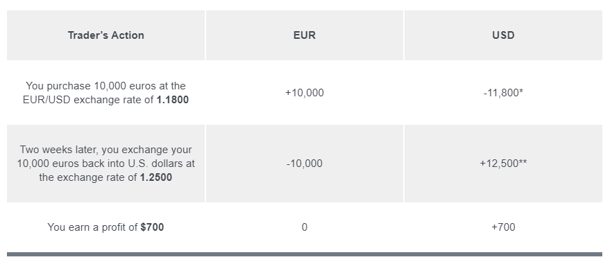
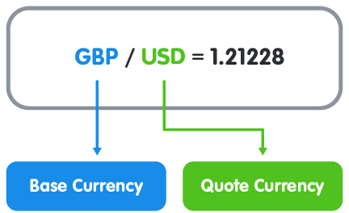
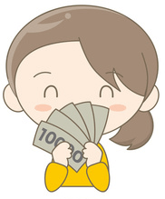

What is forex trading?
The forex (also known as FX or foreign exchange) market refers to the global marketplace where banks, institutions, and individuals speculate on the exchange rate between fiat currencies.
The forex market is the largest financial market in the world.
As a forex trader, you are speculating on whether one currency will rise or fall in price against another currency.
So “forex trading” can be defined as the process of speculating on currency prices to try and make a profit.
The value of a currency is influenced by economic, political, geopolitical events, and trade and financial flows.
Placing a trade in the foreign exchange market is simple.
The mechanics of a trade are very similar to those found in other financial markets (like the stock market), so if you have any experience in trading, you should be able to pick it up pretty quickly.
The objective of forex trading is to exchange one currency for another in the expectation that the price will change.
More specifically, the currency you bought will increase in value compared to the one you sold.
Here’s an example:

*EUR 10,000 x 1.18 = US $11,800
** EUR 10,000 x 1.25 = US $12,500
An exchange rate is simply the ratio of one currency valued against another currency.
For example, the USD/CHF exchange rate indicates how many U.S. dollars can purchase one Swiss franc, or how many Swiss francs you need to buy one U.S. dollar.
Currencies are always quoted in pairs, such as GBP/USD or USD/JPY.
The reason they are quoted in pairs is that, in every foreign exchange transaction, you are simultaneously buying one currency and selling another.
How do you know which currency you are buying and which you are selling?
Excellent question! This is where the concepts of base and quote currencies come in…
Whenever you have an open position in forex trading, you are exchanging one currency for another.
Currencies are quoted in relation to other currencies.
Here is an example of a foreign exchange rate for the British pound versus the U.S. dollar:

The first listed currency to the left of the slash (“/”) is known as the base currency (in this example, the British pound).
The base currency is the reference element for the exchange rate of the currency pair. It always has a value of one.
The second listed currency on the right is called the counter or quote currency (in this example, the U.S. dollar).
When buying, the exchange rate tells you how much you have to pay in units of the quote currency to buy ONE unit of the base currency.
In the example above, you have to pay 1.21228 U.S. dollars to buy 1 British pound.
When selling, the exchange rate tells you how many units of the quote currency you get for selling ONE unit of the base currency.
In the example above, you will receive 1.21228 U.S. dollars when you sell 1 British pound.
The exchange rate or “price” represents how much of the quote currency is needed for you to get one unit of the base currency
If you buy EUR/USD this simply means that you are buying the base currency and simultaneously selling the quote currency.
In caveman talk, “buy EUR, sell USD.”
With so many currency pairs to trade, how do forex brokers know which currency to list as the base currency and the quote currency?
Fortunately, the way that currency pairs are quoted in the forex market is standardized.
You may have noticed that currencies quoted as a currency pair are usually separated with a slash (“/”) character.
Just know that this is a matter of preference and the slash may be omitted or replaced by a period, a dash, or nothing at all.
For example, some traders may type “EUR/USD” as “EUR-USD” or just “EURUSD”. They all mean the same thang.

First, you should determine whether you want to buy or sell.
If you want to buy (which actually means buy the base currency and sell the quote currency), you want the base currency to rise in value and then you would sell it back at a higher price.
In trader talk, this is called “going long” or taking a “long position.” Just remember: long = buy.
If you want to sell (which actually means sell the base currency and buy the quote currency), you want the base currency to fall in value and then you would buy it back at a lower price.
This is called “going short” or taking a “short position”.
Just remember: short = sell.
If you have no open position, then you are said to be “flat” or “square”.
Closing a position is also called “squaring up“.
All forex quotes are quoted with two prices: the bid and ask.
In general, the bid is lower than the ask price.
The bid is the price at which your broker is willing to buy the base currency in exchange for the quote currency.
This means the bid is the best available price at which you (the trader) can sell to the market.
If you want to sell something, the broker will buy it from you at the bid price.
The ask is the price at which your broker will sell the base currency in exchange for the quote currency.
This means the ask price is the best available price at which you can buy from the market.
Another word for ask is the offer price.
If you want to buy something, the broker will sell (or offer) it to you at the ask price.
The difference between the bid and the ask price is known as the SPREAD.
On the EUR/USD quote above, the bid price is 1.34568 and the ask price is 1.34588. Look at how this broker makes it so easy for you to trade away your money.
Here’s an illustration that puts together everything we’ve covered in this lesson: